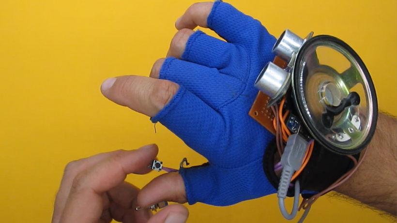
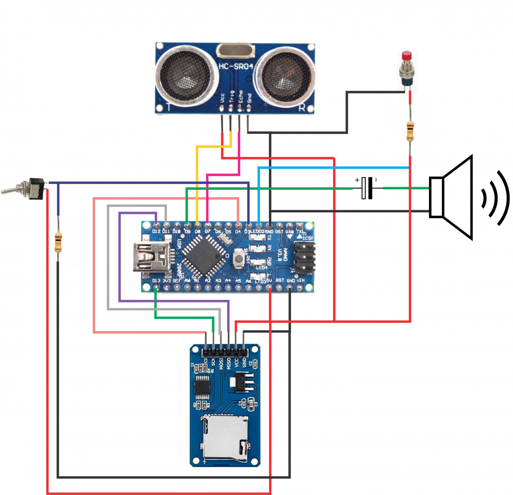

.jpg)
Proyectos
 Proyecto grupal.
Proyecto grupal.
Hemos escogido hacer un guante con audio para personas no videntes.
Las personas no videntes o con baja visión suelen tener problemas para moverse sobre todo en entornos poco conocidos. El movimiento físico es uno de sus grandes desafíos. Por esta razón muchos de ellos siempre van acompañados de algún amigo o familiar.  Tendra dos funciones:
1.Sensor de sonido que se activará cuando los objetos se encuentren a 1 metro de distancia 2.Voz que indicará a cuanta distancia está el objeto  ¿COMO FUNCIONA? Es un guante para personas invidentes, el cual funciona con una placa Arduino Nano, la cual controla un sensor ultrasónico, que emite una onda por la salida trigger y una vez que rebota la recibe por entrada echo. Una vez recibida la señal el programa calcula la distancia en base al tiempo de llegada de la onda, luego se envía una señal para que sea leído un audio desde la tarjeta lectora SD conectada a la placa para que finalmente se escuche por el parlante. ¿RESULTADO FINAL? Podemos ver que el prototipo está conformado por los siguientes elementos. por un parlante que se encuentra en la parte posterior, el sensor ultrasónico, un arduino nano ATmega328P donde subiremos toda la programación, al costado tenemos el lector de tarjetas micro sd en el cual se guardó los audios en formato wav,un capacitor electrolitico, un interruptor para el encendido del circuito y un pulsador con el cual podemos escuchar a qué distancia en centímetros está el objeto.
Mi grupo esta conformado por:
-Alonso Bazan,
-Jean Pierre Alba
-Alexa Huamán
Podemos ver que el prototipo está conformado por los siguientes elementos. por un parlante que se encuentra en la parte posterior, el sensor ultrasónico, un arduino nano ATmega328P donde subiremos toda la programación, al costado tenemos el lector de tarjetas micro sd en el cual se guardó los audios en formato wav,un capacitor electrolitico, un interruptor para el encendido del circuito y un pulsador con el cual podemos escuchar a qué distancia en centímetros está el objeto.
Mi grupo esta conformado por:
-Alonso Bazan,
-Jean Pierre Alba
-Alexa Huamán